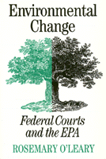

An examination of the impact of federal court decisions on the policies and administration of the EPA
An examination of the impact of federal court decisions on the policies and administration of the EPA


 An examination of the impact of federal court decisions on the policies and administration of the EPA
An examination of the impact of federal court decisions on the policies and administration of the EPA

|  |
Environmental ChangeFederal Courts and the EPARosemary O'Learypaper EAN: 978-1-56639-396-6 (ISBN: 1-56639-396-5) |
"This volume makes an important contribution to the literature of law and public policy. It provides a wide-ranging look at an important and controversial agency as it has interacted with the courts and lawyers across the range of critical environmental policies. A very useful analysis."
—Phillip J. Cooper
Environmental Change examines the impact of hundreds of federal court decisions on the policies and administration of the EPA since its inception in 1970. Having surveyed over 2,000 federal court decisions, Rosemary O'Leary presents case studies of five important policy areas: water quality, pesticides, toxic substances, air quality, and hazardous wastes.
Compliance with court orders, O'Leary discovered, has become one of the EPA's top priorities, at times overshadowing congressional mandates and the authority of EPA administrators.
For an agency often caught between the White House and Congressional agendas, the competing interests of industry and environmental groups, and turf battles with other federal agencies, O'Leary argues, judicial decision making is crucial in the public policy process.
Environmental Change offers valuable information in the fields of public policy and environmental law.
Excerpt available at www.temple.edu/tempress
"An interesting analysis of EPA's early history, coupled with an analysis of cross-pressures from corporations and environmental intervenor groups, makes the study valuable."
—Choice
"O'Leary, who teaches public administration at Syracuse University, presents case studies of judicial/EPA interaction in such environmental policy areas as water quality, hazardous waste, toxic substances, pesticides and air pollution. Moving from the specific to the general in the final chapter, she discusses the cumulative effects of federal court rulings on EPA policies and administration."
—Publishers Weekly
Figures and Tables
Preface
Abbreviations
1. Setting the Stage
2. In Search of Clean Water
3. Controlling Pesticides
4. Regulating Toxic Substances
5. In Search of Clean Air
6. Diffusing Hazardous Wastes
7. Out of the Sample and Into the Universe
Abbreviations for Notes and Bibliography
Notes
Bibliography
General Index
Index of Cases
 | Rosemary O'Leary is Associate Professor of Public and Environmental Affairs at Indiana University, Bloomington. Formerly the Associate Editor of the Natural Resources and Environmental Journal (published by the American Bar Association), she is also the author of The Emergency Planning and Community Right-to-Know Act of 1986: SARA Title III and Local Government Managers. |
Law and Criminology
Political Science and Public Policy
Nature and the Environment
© 2015 Temple University. All Rights Reserved. This page: http://www.temple.edu/tempress/titles/1123_reg.html.